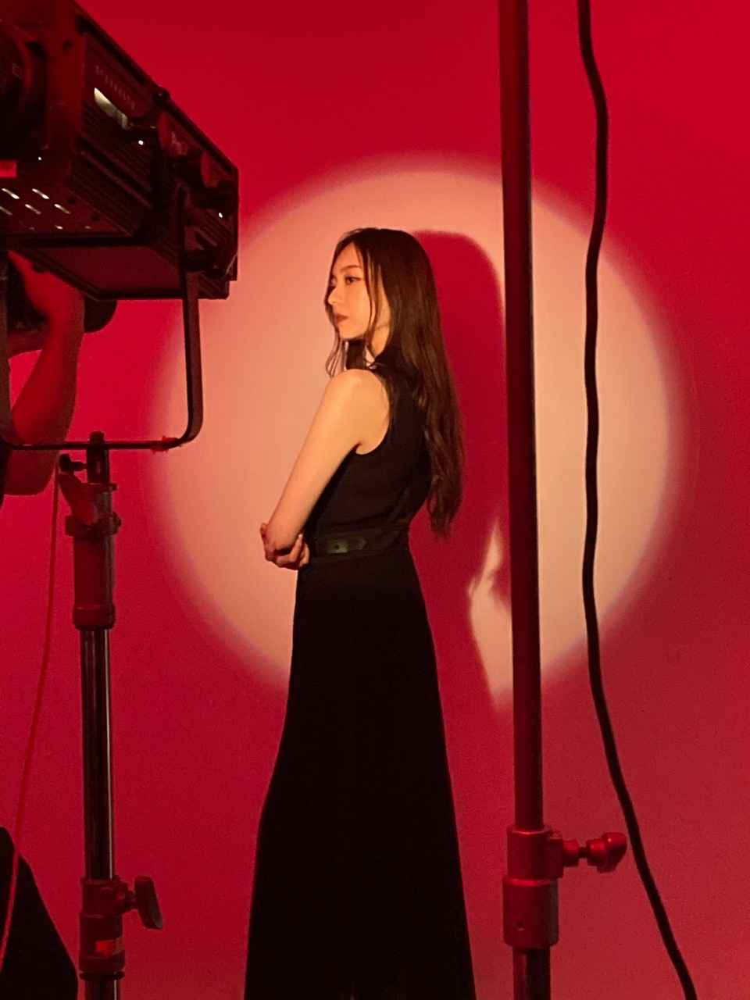
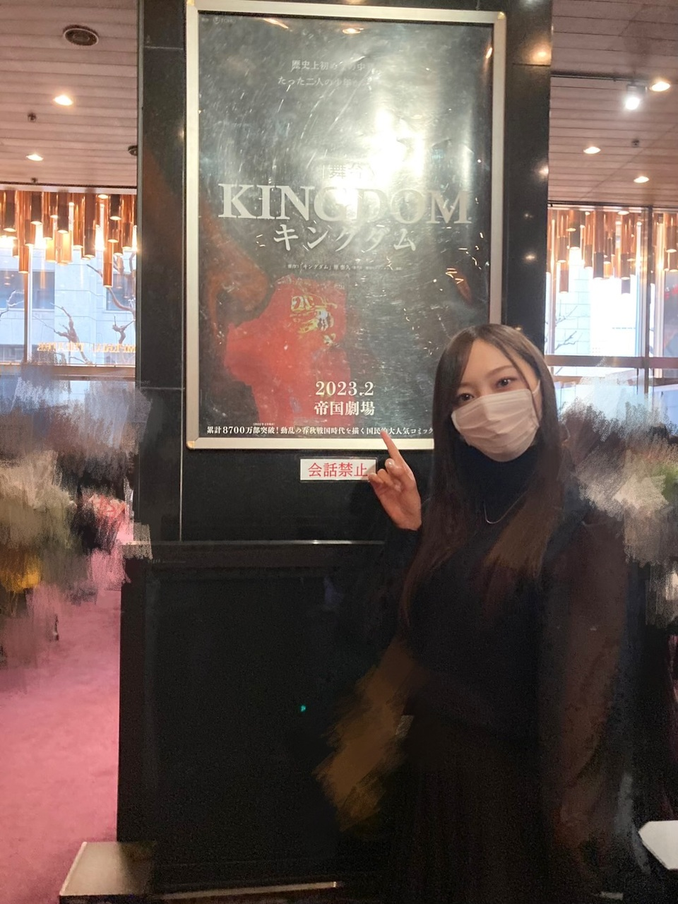
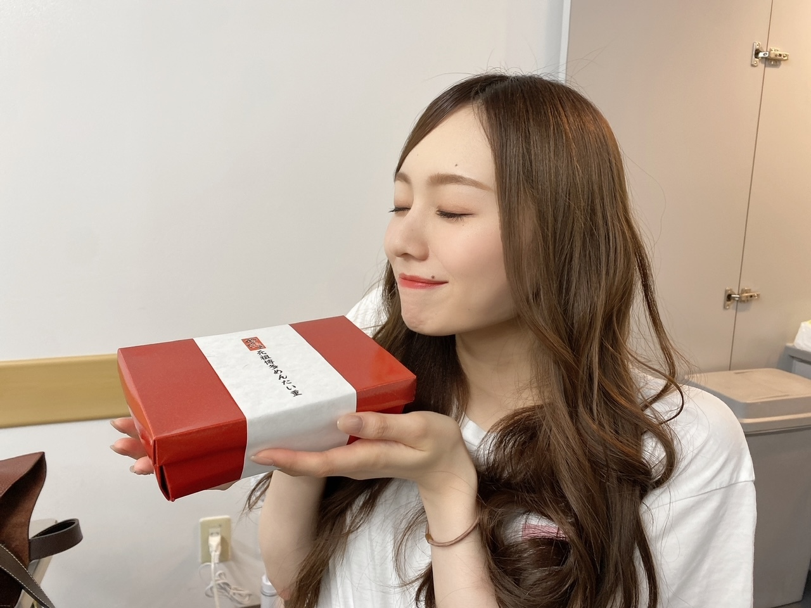
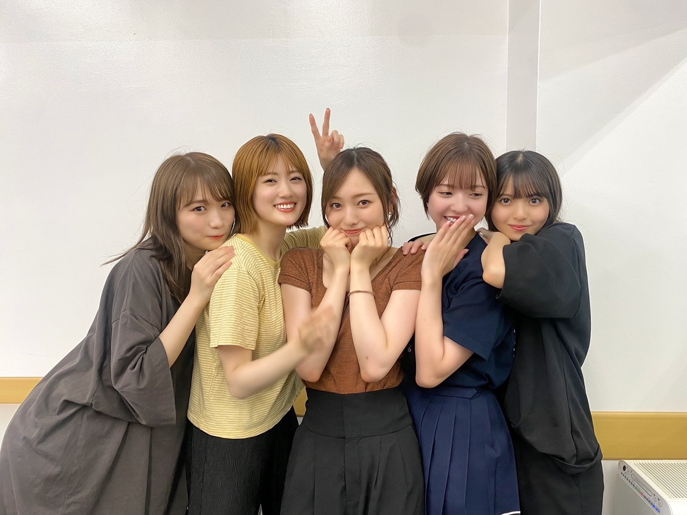

先の予定が埋まっていくのが、すきです。
先日、解禁になりました。
来年上演される舞台「キングダム」に
出演させて頂くことになりました。
私は、楊端和役を務めさせて頂きます。
個人的には 約４年ぶりの舞台、
お芝居のお仕事も
｢映像研には手を出すな！｣ 以来になります。
ここ数年は
自分のやるべきこと、
自分だけに目を向けるのではなく
視野を広げ 周りを見て
今はそこに力を注ぐ時なんだと思い、過ごしてきました
お話を頂いた時、とても驚いたのと
久しぶりに感じる 何とも言えないワクワク感。
反対に、
怖さや いつもとはひと味違うプレッシャーに
胸踊ったのを覚えています。
外へ出て たくさんの方と触れ合った時
自分自身へ得られるものがあるということは
この６年で確実に 実感してきました。
様々な分野で活躍される方が集まり
一つの作品を創る作業、
簡単なことではありませんが、なんともいえない高揚感があります。
初挑戦になることも多いかと思います！
三界の死王。
山の民を束ねる圧倒的な強を舞台上で魅せられるよう
誠心誠意 務めさせていただきます。
今、改めて学び、たくさん恥をかき
自分をさらけ出して挑もうと思います！

本日、公演概要が解禁になりました。
２０２３年 ２月５日（日）〜２７日（月）
劇場：帝国劇場
３月 劇場：大阪 梅田芸術劇場メインホール
４月 劇場：福岡 博多座
５月 劇場：北海道 札幌文化芸術劇場hitaru
・舞台公式HP
https://www.tohostage.com/kingdom/
・舞台公式Twitter
https://twitter.com/kingdom_stage?s=21&t=GTgV5KIi2hWHf1_XbUR9iA
地方公演もございます(^^)
帝国劇場での公演は
ぜひ劇場へいらしてください。
原作、アニメ、映画と盛りに盛り上がってる作品、「キングダム」を
一緒に盛り上げて行けるよう、全力で務めて参ります！
楽しに待っていてくださいね(^^)
３月に観劇させていただいた「千と千尋の神隠し」
その際に、「キングダム」の広告がもう貼りだされていました。

マネさんが写真撮ってくださいました。
ちゃっかり。
帝国劇場は、客席へ何度もを運んだことがある場所。
先輩方が舞台に立つ姿も見てきました！
大きな会場、そして何より迫力のある生演奏。
作品へ全身で包み込まれるように引き込まれるあの感動は、何度味わっても忘れられません。
自分が立つ日が来るとは想像もした事がありませんでした。
載せてなかった写真たちでも(^^)

めんたい重

３期生が列つくっちゃいました。
宝物すぎて載せたくなかったけど、
みんなの宝物にもして欲しいので、載せる。
では！
また、書きます。
Original：https://www.nogizaka46.com/s/n46/diary/detail/100698?ima=4932&cd=MEMBER